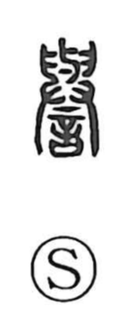

誉

Uncategorized
Kun: homare, homeru | On: yo
honor ・ praise ・ reputation ・ credit
Explanation
Originally written 譽, this is a phono-semantic character. Its phonetic is 與 (与), the source of the On reading yo, whose ancient form depicts two tusks being lifted and carried together, conveying the sense of joining and sharing. Classical glosses define the character as “to honor.” The element that evokes weighing grain on a balance—where the raised pan suggests “lifting up”—adds the nuance of praising. In this way, 誉 expresses collective acclaim: to lift someone up in praise, and by extension honor and credit.